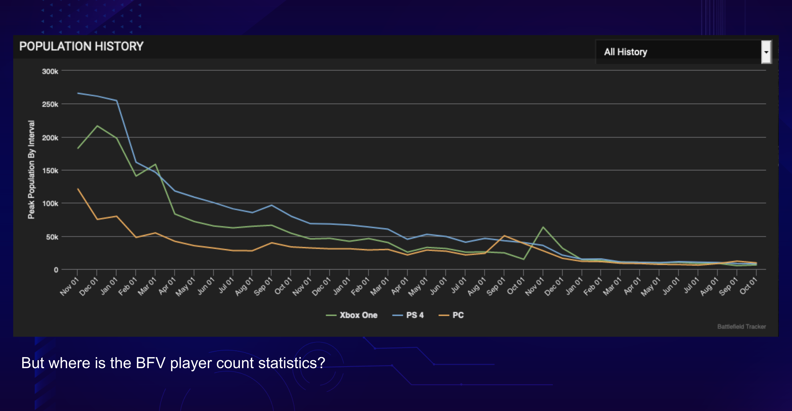
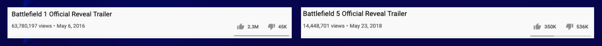

Battlefield 1 Active Player Count
BF1 VS BF5 Interest Over Time



For each one of these bigoted & sad posts I get 1000s of positive ones from amazing fans. Both kinds inspire greater diversity in our games. pic.twitter.com/lSLgPzecbs
— Neil Druckmann (@Neil_Druckmann) July 10, 2017